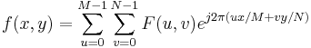

Es handelt sich um einen schnellen Algorithmus für zweidimensionale diskrete Fourier-Transformationen (2D-IDFT), der wie folgt definiert werden kann:

Er wird auf einen zweidimensionalen Datenbereich angewendet und kann ein 2D-Signal aus seinem Spektrum rekonstruieren. Die Rekonstruktion ist jedoch nur korrekt, wenn bestimmte Bedienelemente der Dialogfelder 2D-FFT und 2D-IFFT richtig festgelegt sind: Wenn DÜ in die Mitte verschieben im Dialogfeld fft2 aktiviert ist, sollte auch Verschieben rückgängig machen im Dialogfeld ifft2 aktiviert sein. Umgekehrt sollte Verschieben rückgängig machen nicht aktiviert sein, wenn DÜ in die Mitte verschieben nicht aktiviert ist.
Um 2D-IFFT zu verwenden: